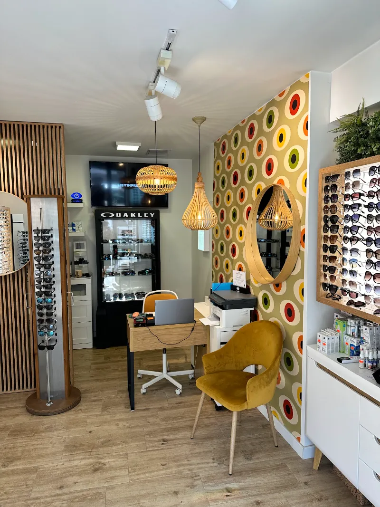
Ingyenes
Konzultáció
Nem biztos benne, hogy szemüveg kell, vagy melyik lencse a jó? Jöjjön be, átbeszéljük – kötelezettség nélkül.
Optika · Székelyudvarhely · 2011 óta
Szemüveg receptre, kontaktlencse, napszemüveg – és egy csapat, amely türelmesen segít megtalálni a keretet, ami valóban Önhöz illik. Két üzlet Udvarhelyen, az egyik vasárnap is nyitva.
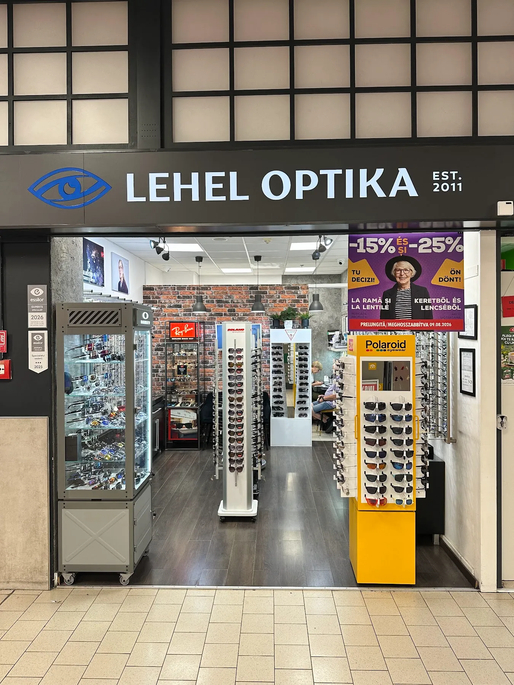
Szolgáltatások

Nem biztos benne, hogy szemüveg kell, vagy melyik lencse a jó? Jöjjön be, átbeszéljük – kötelezettség nélkül.
Hozza el a receptjét, és a keretválasztástól a lencse illesztéséig mindent elintézünk.
Lencsék és ápolószerek készletről – ReNu, Biotrue és társaik mindig kéznél.
Ray-Ban, Oakley, Polaroid és a szezon trendjei – a beállítást is megcsináljuk, hogy kényelmes legyen.
Tokok, tisztítókendők, láncok – minden, ami a szemüveg mellé kell.
Látásvizsgálat
Modern, gépi méréssel dolgozunk, a vizsgálat pár perc.
Vizsgálatra jelentkezemHúzza a lencsét, amíg élessé nem válik
Lencse: −2.64 D ✓ Éles!
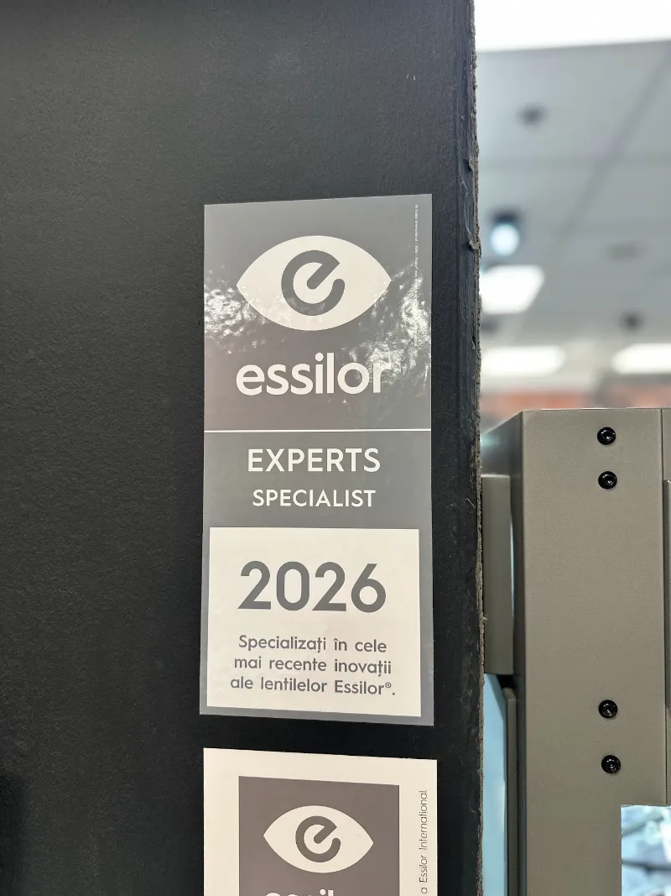
Időpontfoglalás
Nem kell telefonálni, nem kell várni. Válassza ki az üzletet és az időpontot – a visszaigazolás azonnal megérkezik SMS-ben.
Keretek és napszemüvegek
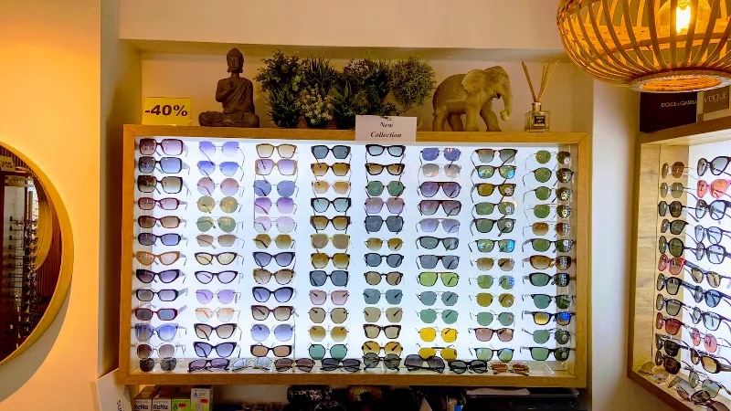
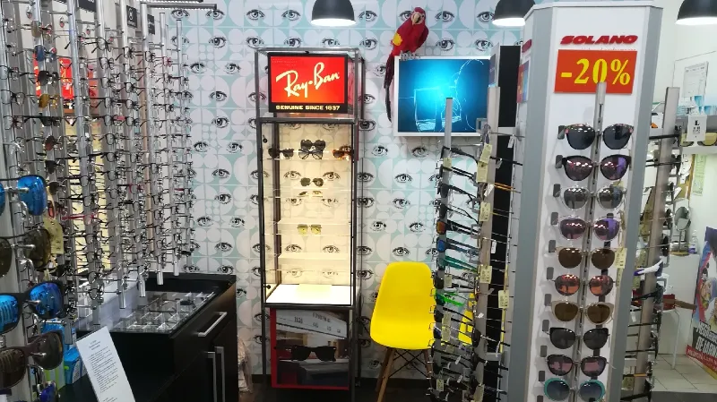
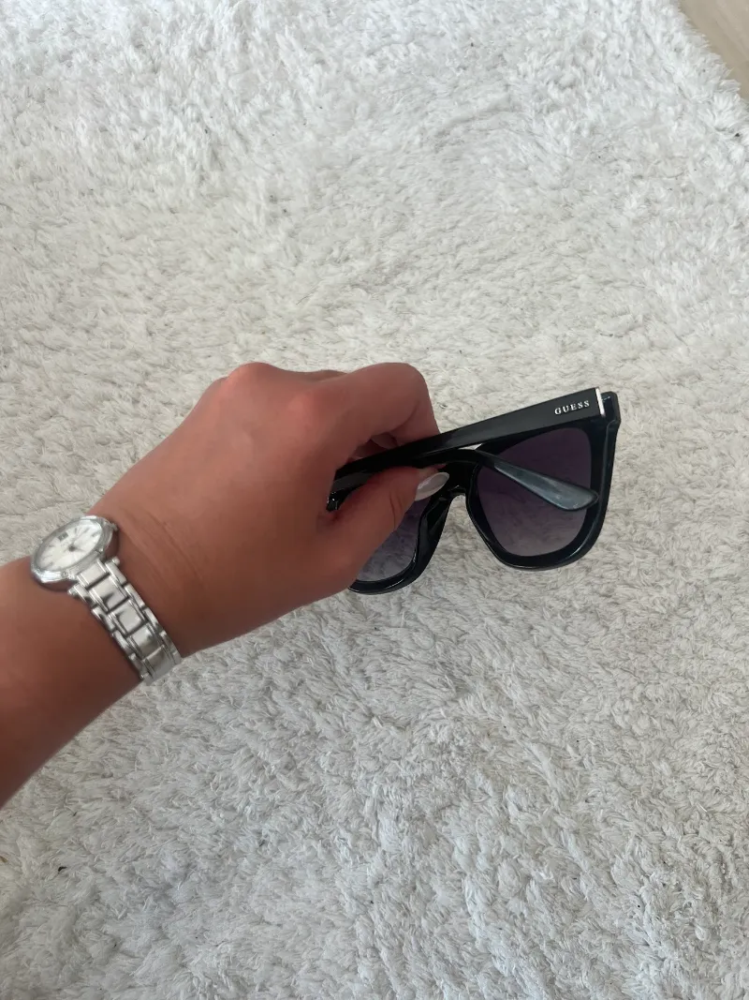
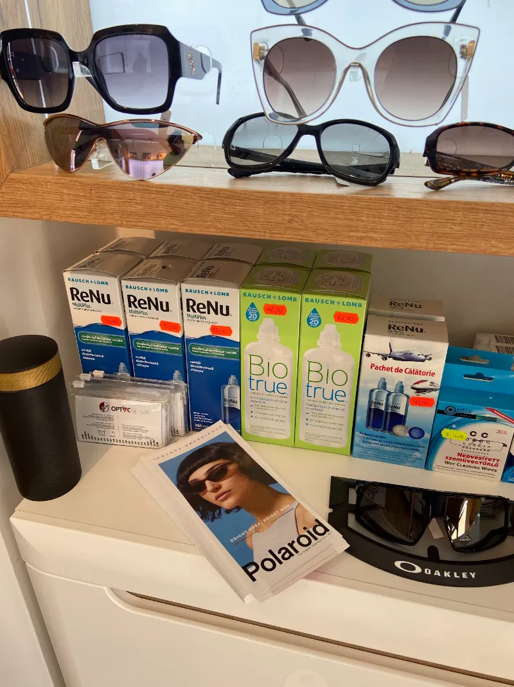
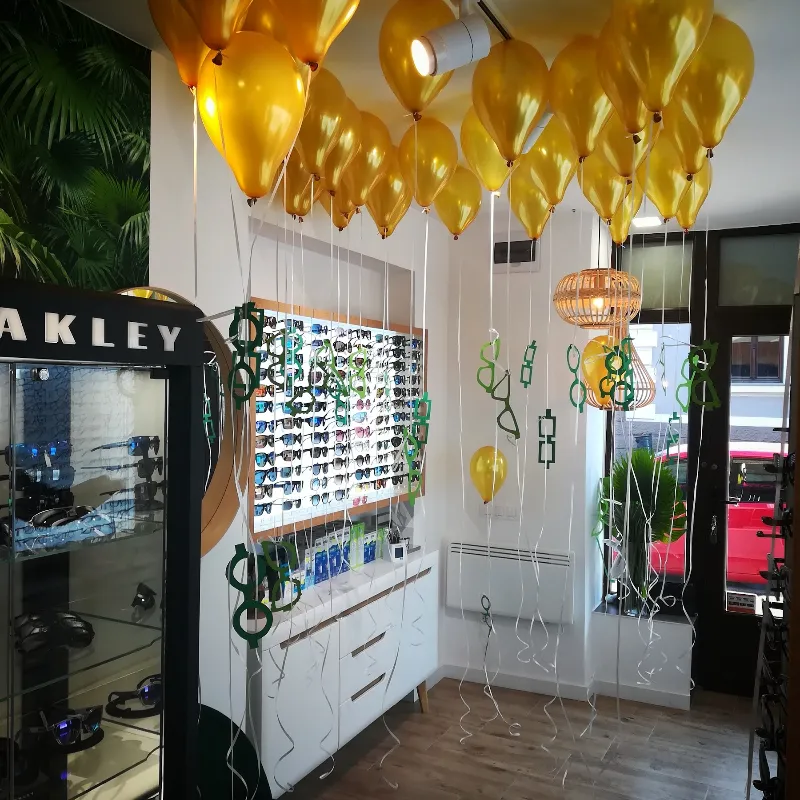
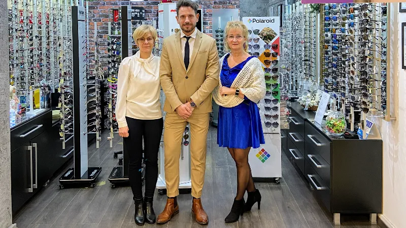
Rólunk
A Lehel Optika 2011 óta udvarhelyi optika. Két üzletünkben ugyanaz a szemlélet: szakszerű kiszolgálás, magas minőség és annyi idő, amennyi egy jó döntéshez kell.
2026-ban megkaptuk az Essilor Experts tanúsítványt – ez azt jelenti, hogy a legújabb lencse-technológiákra képzett szakemberek dolgoznak nálunk.
„Én nagyon nehezen találok olyan keretet, ami jól állna, de itt mindig türelmesen segítettek – és gyorsan el is készült!”
Google-értékelés · Bethlen G. 13
„Már az egész család itt csináltatja a szemüveget, gyors és pontos! Szívből ajánljuk!”
Google-értékelés · Kaufland
Üzleteink
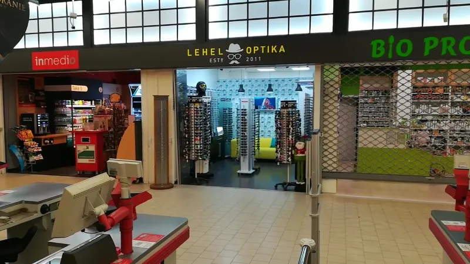
—
Strada Bethlen Gábor 79
a Kaufland üzletsorában · 535600 Odorheiu Secuiesc
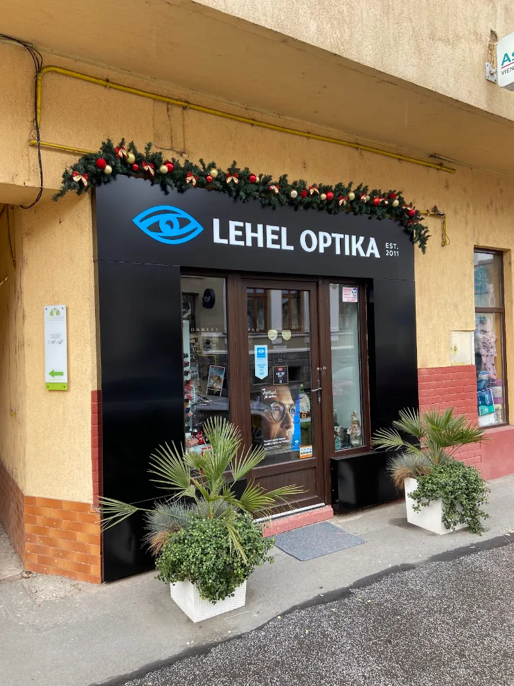
—
Strada Bethlen Gábor 13
535600 Odorheiu Secuiesc
Csak a látványtervben · a Lehel Optika csapatának
A weboldal nem csak névjegy. Ezek a folyamatok emberi munka nélkül futnak, és visszahozzák a vendégeket.
A vendég SMS-t kap, az üzlet pedig értesítést az új időpontról. Nincs félrehallott név, nincs elveszett cetli.
Kevesebb elmaradt időpont, egyetlen gombnyomással lemondható vagy áttehető.
A pultnál egy kattintás, és a vendég már tudja is, hogy mehet érte. Nem kell egyenként telefonálni.
Egy udvarias üzenet Google-linkkel. Több friss értékelés = előrébb a „optika Székelyudvarhely” keresésben.
A vendég magától visszajön – nem a konkurenciához megy. Kontaktlencsénél az utánrendelésre is szól.
A „Most nyitva / Zárva” jelzés magától számol – két üzlet, két eltérő program, sosem téved.
Új akció? Egy mezőt kell átírni, és az egész oldalon azonnal frissül.
Egy gombnyomás, és az egész oldal románul olvasható – a román vásárlóknak is.
Most mindkét Google-profilon üres a „Weboldal” mező. Ezt töltjük ki elsőként.